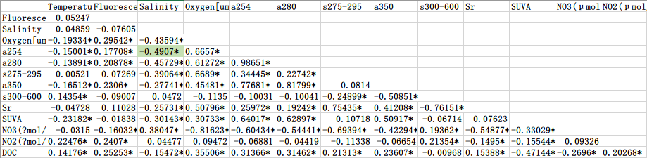
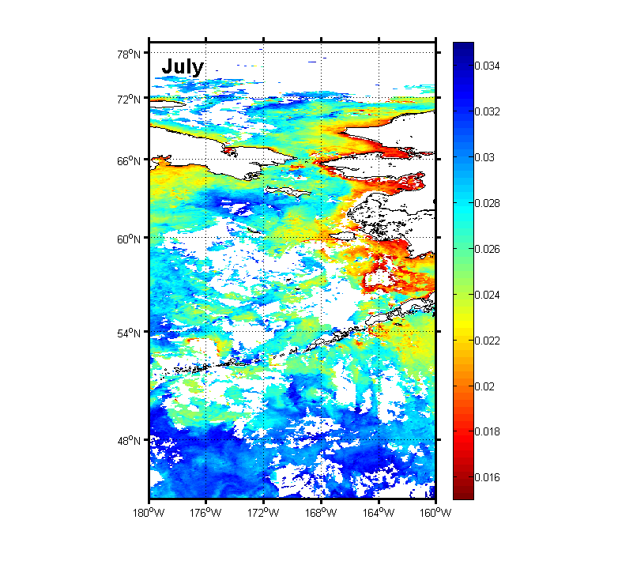
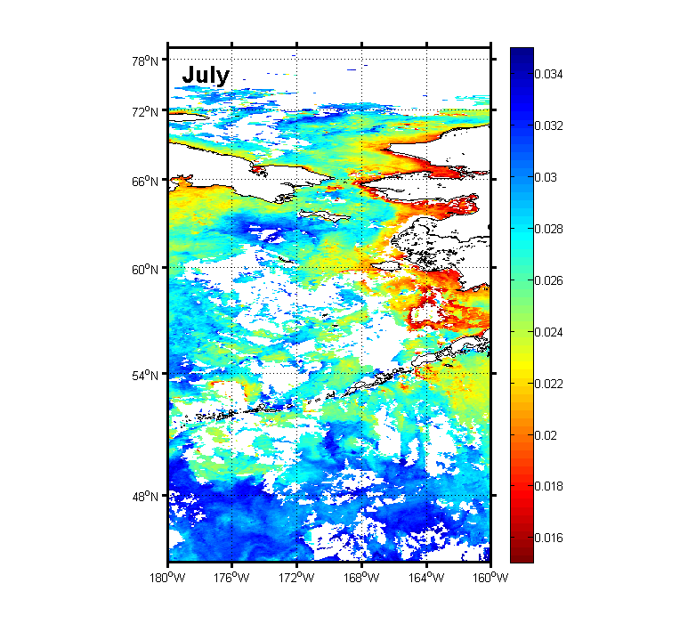

Method-Cruise Station
CHINARE 6th Arctic - All Station
B Section- Bering Sea
Physical Parameter for B Section


Optical Indices
a λ =2.303*A λ /l====> Concentration
SUVA=a254/DOC===>Degree of Aromaticity
s275-295===>Low s275-295: High Molecular Weight/High tDOM
sr=s275-295/s300-580===>Source/ Molecular weight
a350 ===> dissolved organic matter/ lignin phenol concentration
BIX=[(em380 at ex310)/(em430 at ex310)] ===>Source:0.8 - 1.0 --> Microbial;< 0.6--> Allochthonous
FI=[(em450 at ex370)/(em500 at ex370)] ===> Source Microbial (High)/terrestriall (Low) fulvic acids
Weishaar et al., 2003; Mladenov et al., 2007
Stedmon et al., 2011; Fichot et al., 2013/ Helms et al., 2008
Sally. W et al 2013. jgr:biogeoscience; Spener et al., 2009; Stedmon et al., 2011
Burdige et al., 2004; Coble, 1996; McKnight et al., 2001;Birdwell and Engel, 2010

CDOM for B Section
0-400m


0-4000m


由s275-295参数可知，中心海盆区的低值为陆源输入，可是SUVA的值只在表层略高
Station-B08


R Section
Physical Parameter for R Section


Comparison between CDOM and 18O
aw代表大西洋端元；mw代表淡水端元；sim代表海冰融化水端元；
端元值分别为：
SALaw = 35.00;SALmw=0;SALsim=4.0
18Oaw =0.3; 18Omw=-20.0; 18Osim = -2.0
0-400m


0-4000m


BIX和FI参数由荧光光谱计算得来。荧光光谱只测量了200m以浅的样品。
吸光度的（无论是波长是280,254或者350nm）总体趋势是：从表层到深层，吸光度降低
s275-295的高值指示的是低分子量，而低值指示的是高分子量
表层和300m以深的分子量较低，中层（100-300m）的分子量较高
而DOC和吸光值恰巧在分子量较高的层次中出现高值
硝酸盐也出现高值
SUVA表示的是芳香度水平
R15站0-200m之间可以看到SUVA参数的高值，指示着高的芳香度，意味着陆源的输入
根据童金炉等, 2014中指出
可能与研究海域受顺时针波弗特流涡所形成的埃克曼辐聚作用有关
这种辐聚作用将来自欧亚大陆或北美大陆的河水组分聚集于研究断面北部海域。
DOC在陆架的底层均出现高值：可能与沉积物的再悬浮有关。


S Section- Canadian Basin
Physical Parameter


NB Section - North Bering Basin
Physical Parameter


东面陆架区是育空河入海口，吸光值、DOC高，营养盐和BIX低；主要DOM贡献为陆源河流输入
陆坡区相反，主要贡献为次表层生物生产力贡献。
BS Section - Bering Strait Section
Physical Parameter

西边阿纳德尔流
表层高温低盐
温跃层出现在10m以浅
温跃层以深水体低温高盐;
DO含量低
东边阿拉斯加流
混合较为剧烈
出现溶解氧和荧光的极大值
生产力较高


Parameter Relationship
Vs Salinity


Pearson Correlation Coefficient

a375 Vs S300-600

s275-295Vs Reflectance
 
